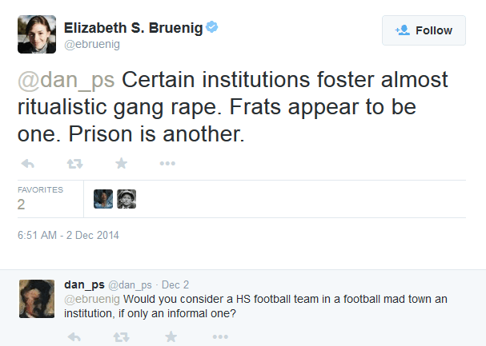
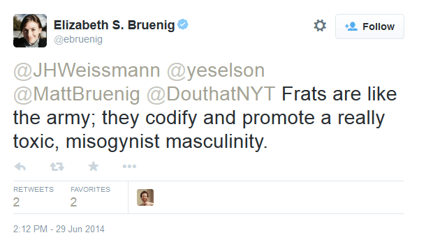
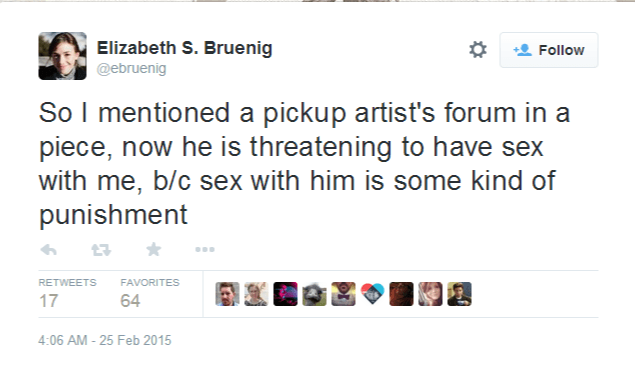
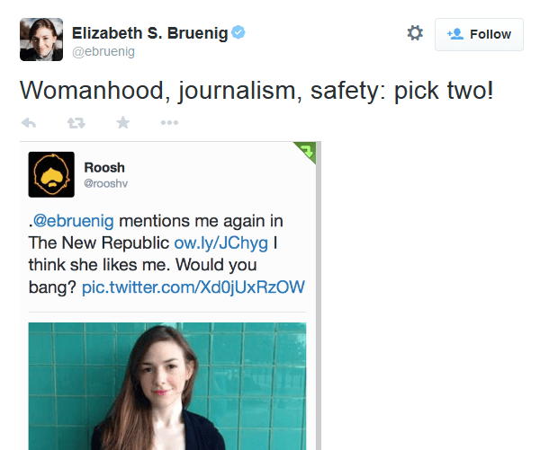
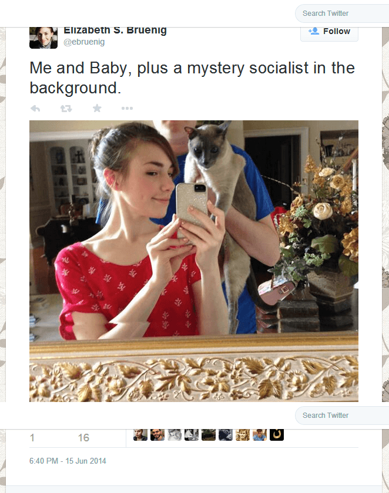

< < < Back
Is Elizabeth Stoker Bruenig Single-Handedly Destroying The New Republic? – Return Of Kings
Elizabeth Stoker Bruenig is a staff columnist for The New Republic and a contributor to numerous magazines, including The Atlantic, The Nation and Salon. In the wake of Rolling Stone retracting Sabrina Rubin Erdely’s phony article on rape at the University of Virginia, Stoker Bruenig penned an incomprehensible response claiming that the problem with Rubin Erdely’s article was that “it used rightwing tactics to make a leftist point”:
The left tends to view oppression as something that operates within systems, sometimes in clearly identifiable structural biases, and other times in subtle but persistent ways. Mortgage discrimination against black families over the last century is an example of a structural, on-the-books bias that had an extraordinarily damaging impact on African Americans; but the fact that black children are read as older and less innocent than their white peers, while neither a law nor a regulation, is of a piece with the overall oppression of black folks in America, resulting in subtle treatment by teachers and authority figures that alienates black children from wider society starting at a very tender age. These disparate forms of discrimination come together, in the left imagination, to form a tightly composed set of prejudices and policies that are difficult to disentangle. Making sense of oppression, therefore, requires looking at entire systems of oppression, not just specific instances or behaviors.
Stoker Bruenig has already been raked over the coals for her muddled prose and malapropisms, but her hypocrisy and bigotry has received little mention. Her views on the UVA rape hoax are part of a broader pattern of anti-male hatred. The fact that The New Republic continues to employ this female typist is a huge strike against their credibility.
Stoker Bruenig’s History Of Hatred And Hypocrisy
Long before Rolling Stone published “A Rape on Campus,” Stoker Bruenig had a history of making bigoted comments about men. For example, she has repeatedly (and falsely) claimed that fraternities have a “gang rape” problem and are no different than prisons. Both she and her husband Matt Bruenig support banning fraternities from colleges based on faulty sociology, and her hatred of them runs so deep that she chose her alma mater, Brandeis, in part to avoid them:



Stoker Bruenig is no stranger to making false accusations against men herself. Two months ago, she claimed that Return of Kings publisher Roosh Valizadeh had made a “rape threat” against her. Her “evidence” was a tongue-in-cheek Tweet Roosh made asking his followers to gauge how attractive she was:


The irony of Stoker Bruenig’s false accusation against Roosh (and her references to “pick-up artists” as “garbage”) is that she’s a fan of a real (statutory) rapist: Mark Ames. In a recent New Republic article on the Germanwings crash, Stoker Bruenig approvingly referenced Ames’ writings:
Theories of Lubitz’s motives proliferated in the aftermath of the crash. Though Lubitz left no manifesto and made no statement at any time as to the meaning of his actions, some are still convinced his was an act of terrorism. An ex-girlfriend of Lubitz’s has come forward to claim that the co-pilot fantasized about fame and notoriety, and must have become distraught when he realized his dreams of a job at Lufthansa, the largest airline in Europe, were unlikely to come true. Author Mark Ames, who has written a book on rage killings in the United States, has raised the possibility that Lubitz’s actions were those of a disgruntled employee, not unlike the postal shootings of the ’80s and ’90s.
In his 2000 memoir The Exile: Sex, Drugs, and Libel in the New Russia, Ames bragged about sleeping with a 15-year-old girl and also wrote about how he threatened to murder his girlfriend if she didn’t get an abortion:
Right then, I stared at Katya with a look—I’m not sure how it appeared to her, but in my mind, I was starting to contemplate two courses of action: murder, or AWOL.
“What will you do, kill me?” she said, laughing nervously.
“Maybe, yeah,” I replied. “I’ll throw you off my balcony. I’ll make it look like an accident.”
She started to cry, but I was relentless. I told her that if she had the child, she would be killing me, so it was an act of self-defense. And if I didn’t kill her, then I would flee Moscow and she’d never find me… I was relentless. I attacked her the Russian way: I wore her down for hours during the night, KGB interrogation-style.
[…]
At 5:30 the next morning, Katya, acting the martyr, quietly slipped out of my apartment, made a beeline to the abortion clinic, and sucked the little fucker out.
If it seems odd that a self-professed Christian socialist and feminist would praise a soi-disant misogynist like Mark Ames, consider that Stoker Bruenig thinks that right-wing female politicians such as Joni Ernst and Sarah Palin should endure vicious, sexist attacks that she would label “harassment” if they were directed at women of the left.
Also consider that despite being a socialist calling for wealth redistribution, Stoker Bruenig and her husband are quite wealthy themselves, as shown by her education at Brandeis and this selfie:

It’s clear that Stoker Bruenig is a firm believer in “do as I say, not as I do,” so it’s not shocking that she’s latched onto Rolling Stone’s rape hoax.
Why Stoker Bruenig Should Be Fired
The New Republic is a magazine that is unusually susceptible to hiring frauds and liars: they were the home of infamous fabulist Stephen Glass. While they survived Glass’ fabrications, they may not be able to survive Stoker Bruenig’s foolishness. Her incoherent, freshman-level prose and nonsensical beliefs are enough to disqualify her from writing for any serious publication, but it’s Stoker Bruenig’s bigotry and hatefulness that truly make her repulsive.
In order to retain their credibility, The New Republic needs to fire Stoker Bruenig immediately. Through her writings and actions, she has shown herself to be a craven hypocrite with no morals or maturity. Only by removing Stoker Bruenig from their masthead can The New Republic avoid having their reputation destroyed.
Read More: Why Haven’t The People Who Pushed Rolling Stone’s UVA Rape Hoax Story Been Fired?